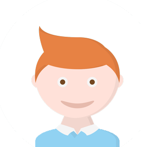

Hoofdstuk 9: border & box
Border-radius
Border-radius introduceerden we eerder al. Deze eigenschap is ruim ondersteund en de site border-radius.com is handig om wat te experimenteren met asymmetrische afrondingen. Je kunt de border-radius ook procentueel instellen.
{border-radius:50%}
kun je gebruiken om een vierkante afbeelding via CSS cirkelvormig weer te geven zoals in Bootstrap zo vaak gebruikt wordt.
 + CSS =
Border-image
Nieuw is dat je de randen nu ook met een afbeelding kunt decoreren. Border-image.com is een site die je helpt bij het verkennen van de mogelijkheden. Het idee is dat je in 1 afbeelding uitwerkt hoe elke hoek er moet uitzien, hoe de horizontaal en verticaal te gebruiken afbeelding moet zijn en dat je die door de juiste instellingen te gebruiken, combineert in 1 rand.
De courant gebruikte waarden voor border-image-repeat:
- stretch
- repeat
- round
Gebruik de deeleigenschap border-image-repeat: space beter niet, Chrome heeft daar namelijk last mee…
Box-shadow
Naar analogie met de text-shadow is er ook de eigenschap box-shadow om schaduwen aan blokelementen te maken. cssmatic.com is een plaats waar je kunt experimenteren met box-shadow. Ook css3gen.com en css3generator.com kunnen helpen. Net zoals bij de text-shadow-eigenschap zijn de mogelijkheden in de generatoren eerder beperkt. Er zijn nog meer instellingen mogelijk zoals je in het handboek kan ontdekken.
CSS shapes
Wie zich verdiept in het werken met borders, zal ontdekken dat je door handig gebruik te maken van de eigenschappen ook heel atypische vormen kunt realiseren in css, zoals bijvoorbeeld een driehoek, een trapezium, een tekstballon enz. Hoe dit gerealiseerd kan worden, vind je bijvoorbeeld in het artikel Shapes Of CSS of in CSS refreshers borders.